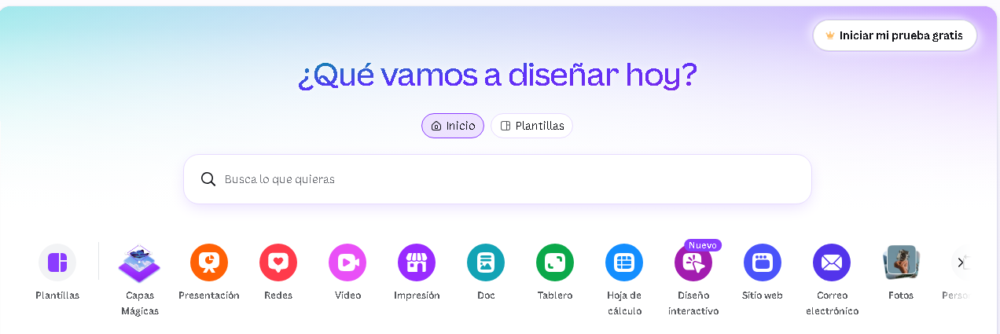
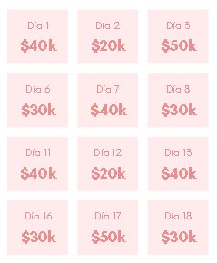
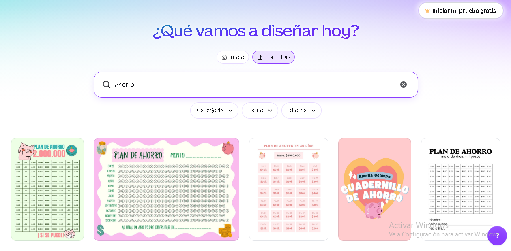
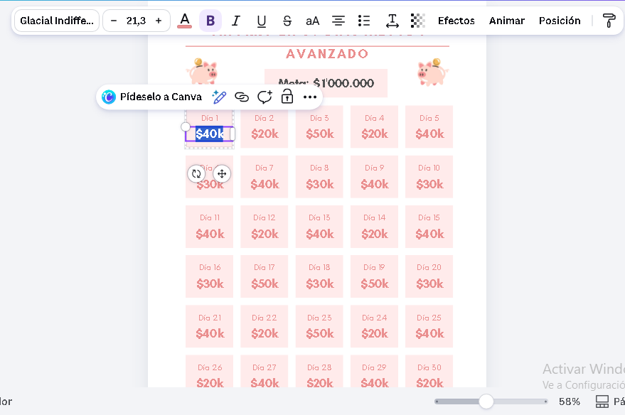

C rear una plantilla de ahorro en Canva es uno de los métodos más efectivos para visualizar tus metas financieras y mantener la disciplina de guardar dinero mes a mes. En lugar de lidiar con hojas de cálculo complejas, un diseño visual te permite hacer un seguimiento intuitivo de tus avances.
En esta guía tutorial aprenderás cómo diseñar desde cero o adaptar una plantilla predeterminada en Canva paso a paso, personalizada según tus objetivos financieros y lista para imprimir o usar digitalmente.
- 1. ¿Por qué utilizar una plantilla de ahorro visual?
- 2. ¿Cómo crear una plantilla de ahorro en Canva paso a paso?
- 3. ¿Qué tener en cuenta al seleccionar el diseño base?
- 4. ¿Cómo personalizar y editar tu plantilla de ahorro?
- 5. Ventajas de crear tu propio organizador financiero
- 6. Elementos esenciales que debe incluir una plantilla de ahorro
- 7. Errores comunes al diseñar tu plan de ahorro
- 8. ¿Cómo exportar e imprimir tu plantilla correctamente?
- 9. Claves para cumplir tu meta de ahorro con éxito
Si utilizas Canva para crear una plantilla de uso personal e imprimirla, no tendrás inconvenientes legales.
Si planeas vender o distribuir digitalmente tus diseños, asegúrate de utilizar elementos y tipografías con licencia comercial libre dentro de la plataforma.
1. ¿Por qué utilizar una plantilla de ahorro visual?
Muchas personas fallan al ahorrar porque mantienen sus metas en la mente o dispersas en anotaciones informales. Contar con una plantilla visual imprimible transforma la intención abstracta en un hábito diario concreto.
Al subdividir una gran cifra en pequeñas casillas o cuotas progresivas, la meta se percibe accesible y estimula la motivación cada vez que tachas o coloreas un avance.
2. ¿Cómo crear una plantilla de ahorro en Canva paso a paso?
Para empezar, accede a Canva.com e inicia sesión o registra una cuenta gratuita.

Escribe términos de búsqueda clave en la barra principal para desplegar maquetas prediseñadas que puedas adaptar rápidamente:
- Plantilla de ahorro / Planificador de ahorro
- Reto de ahorro 52 semanas / Reto 100 días
- Plantilla de rifa / Cuadrícula numérica
- Tracker financiero / Tracker de presupuesto
Aprovecha diseños existentes con cuadrículas o tablas; estos formatos son ideales para colocar montos monetarios y marcas de seguimiento.
3. ¿Qué tener en cuenta al seleccionar el diseño base?
No es obligatorio que el diseño original sea expresamente para finanzas. Lo fundamental es que disponga de una estructura modular o matriz de casillas fácilmente editable.

Selecciona la opción "Personalizar esta plantilla" para ingresar directamente al editor gráfico de Canva.

4. ¿Cómo personalizar y editar tu plantilla de ahorro?
Dentro del editor, haz clic sobre cualquier cuadro de texto o gráfico para modificar fuentes, colores, tamaños y valores numéricos.
Ajusta la cifra total (por ejemplo: $500, $1.000 o $5.000) y divide dicho monto entre la cantidad de casillas disponibles para calcular la cuota por abono.

Agrega campos clave como "Meta Total", "Fecha de Inicio", "Fecha Límite" y un cuadro para registrar observaciones o reglas del reto.
5. Ventajas de crear tu propio organizador financiero
Diseñar una plantilla propia te da flexibilidad absoluta para adaptar la frecuencia de ahorro (diaria, semanal o quincenal) a la realidad de tus ingresos.
Un formato 100% personalizado aumenta el sentido de compromiso personal frente a tus metas de ahorro.
6. Elementos esenciales que debe incluir una plantilla de ahorro
Para garantizar la efectividad de tu organizador visual, asegúrate de estructurar los siguientes campos:
- Objetivo claro: Define el destino del dinero (fondo de emergencia, vacaciones, pago de deudas).
- Monto objetivo: La cifra exacta total a reunir.
- Cuadrícula progresiva: Casillas numeradas o con valores específicos lista para tachar o colorear.
- Fechas de control: Registro de inicio y fecha estimada de finalización.
7. Errores comunes al diseñar tu plan de ahorro
Evita establecer cuotas desproporcionadas en las primeras etapas. Es preferible fijar abonos pequeños y constantes que aseguren el cumplimiento del reto.
Asimismo, evita recargar la plantilla con elementos gráficos innecesarios que entorpezcan la visibilidad de los números al imprimir.
8. ¿Cómo exportar e imprimir tu plantilla correctamente?
Una vez concluido tu diseño, haz clic en el botón "Compartir" ubicado en la esquina superior derecha y selecciona la opción "Descargar".
Para obtener la máxima calidad gráfica de impresión, selecciona el formato PDF para impresión. Si prefieres utilizar la plantilla en dispositivos digitales o apps de notas, descarga el archivo en formato PNG o JPG.
9. Claves para cumplir tu meta de ahorro con éxito
Una plantilla de ahorro en Canva es una herramienta poderosa cuando se combina con la consistencia diaria o semanal.
Coloca tu plantilla impresa en un lugar visible o mantenla fijada en tu pantalla principal. Registrar cada aporte te mantendrá enfocado en la construcción de tu estabilidad financiera.
Publicado originalmente el Jul 27, 2026 · 12:31 h . Este análisis forma parte de la colección permanente de estudios sobre riqueza, emprendimiento y mentalidad empresarial.